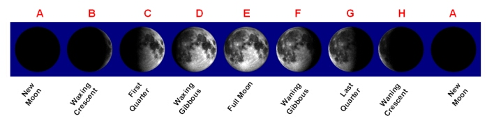

The Moon and planets do not emit their own light – we see them in the sky only because they reflect sunlight. Depending on the relative positions of the Earth, Sun and a planet or the Moon, varying amounts of the surface appear illuminated. The amount of illumination is known as the phase.


The phases of the Moon
| Phase | Rise, Transit and Set time | Diagram Position |
|---|---|---|
| New Moon | Rises at sunrise, transits meridian at noon, sets at sunset | A |
| Waxing Crescent | Rises before noon, transits meridian before sunset, sets before midnight | B |
| First Quarter | Rises at noon, transits meridian at sunset, sets at midnight | C |
| Waxing Gibbous | Rises after noon, meridian after sunset, sets after midnight | D |
| Full Moon | Rises at sunset, transits meridian at midnight, sets at sunrise | E |
| Waning Gibbous | Rises after sunset, transits after midnight, sets after sunrise | F |
| Last Quarter | Rises at midnight, transits meridian at sunrise, sets at noon | G |
| Waning Crescent | Rises after midnight, transits after sunrise, sets after noon | H |
| New Moon | The cycle repeats | A |
A complete cycle of phases is observable for the inferior planets, Mercury and Venus. Early telescopic observations of Venus by Galileo were used to support the Copernican view that the Sun was at the centre of the Solar System (a heliocentric model). Mars is observed to have a gibbous phase when it is near quadrature (elongation = 90o and 270o).
See also: gibbous moon, waxing crescent moon, first quarter moon, waxing gibbous moon, waning gibbous moon, last quarter moon, waning crescent moon.